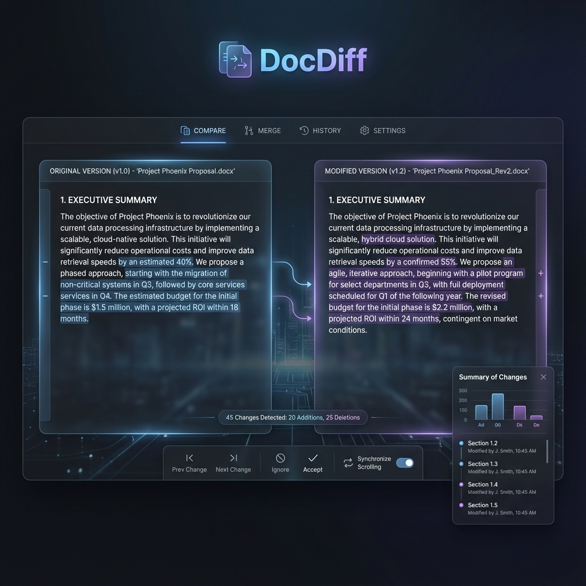

Stop missing critical changes in massive technical specifications. DocDiff uses AST parsing to understand hierarchy, ensuring 100% accurate "Change Order" generation.

DocDiff replaces manual eyes and basic line diffs with a sophisticated structural analysis engine.
We don't just compare text. We build an Abstract Syntax Tree of your .docx, preserving the relationship between headings (H1-H4) and content.
Detects stable ID's in headings (like D/R_SDD01_...) to match sections even if titles are renamed or moved.
Drills into table rows to identify exact changes, additions, or deletions while maintaining table header context.
Upload or point the CLI to your original and revised Word documents.
DocDiff uses smart heuristics to align chapters, sections, and paragraphs.
A perfectly formatted .docx is generated, ready for formal submission or internal review.
# Installation python3 -m venv .venv source .venv/bin/activate pip install -r requirements.txt # Quick Start # Edit cli.py with your paths python3 cli.py # Success! Change Order generated.
Open source, Python-powered, and built for structural precision.